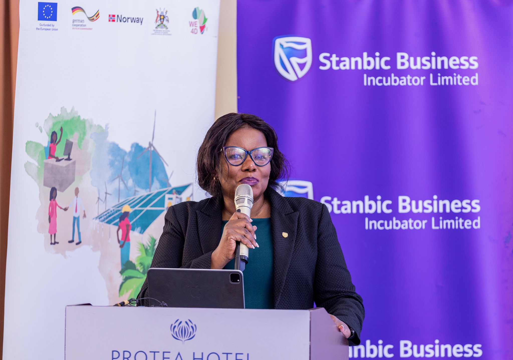

106.8 ABS FM
Empowering the Community - Through Trusted News & Information
Empowering the Community - Through Trusted News & Information
Bringing Northern Uganda closer through trusted journalism, community voices, culture, sports, and development stories.

KAMPALA: A total of 165 women-led enterprises have graduated from the Green Businesses and Jobs for the Green Transformation Project, marking a major milestone in efforts to strengthen women’s entrepreneurship, create green jobs and accelerate Uganda’s transition to a sustainable economy. The graduation ceremony, organised by Stanbic Business Incubator Limited (SBIL) in partnership with GIZ, the German development agency, and the Ministry of Gender, Labour and Social Development, celebrated the successful completion of Cohorts 1, 2, 3 and 4 of the programme.
“Women-led green enterprises have enormous potential to create jobs, reduce environmental degradation and build more sustainable local economies. Through this partnership, we are equipping entrepreneurs with the skills, networks and financial readiness needed to grow businesses that contribute meaningfully to Uganda’s economic transformation,” the Michael said. The Promoting Green Businesses and Jobs for the Green Transformation Project, forms part of the broader WE4D programme, which is jointly funded by the Government of Norway and the European Union. It aims to strengthen women’s economic participation while promoting environmentally sustainable enterprise development across East Africa. The two-year programme combines classroom training, workshops, site visits and one-on-one coaching to support women entrepreneurs in scaling their businesses and becoming investment-ready. Judith Kibuuka, the Stanbic Uganda Holdings Limited (SUHL) Exco member who represented the Chief Executive Mark Ocitti said the graduation reinforced Stanbic’s role in enterprise development and women’s economic empowerment, particularly as the Bank celebrates 35 years of positively impacting businesses, farmers, women and youth across Uganda. She said Stanbic, working with partners such as GIZ, has committed UGX 1 trillion towards priority areas including financial inclusion, enterprise development, infrastructure investment, climate resilience financing and corporate social investment. “Our objective is to ensure that women-led enterprises are not only trained, but are also connected to finance, markets and the support systems they need to grow into sustainable businesses that contribute to Uganda’s economic transformation,” Kibuuka said. For many of the graduates, the programme has already begun transforming their businesses. Anne Kayiwa the founder papillon Living a clean energy solutions company, said the training had helped her adopt more sustainable business practices. “When we joined the training, our consistent question was about money and how we can access funding to grow our businesses but after the mentorship, I can comfortably say the problem was not money. But knowledge on how to run and manage our enterprises, and formalization, which we have successfully learnt.” she said. Joan Muchiruka, the founder of Iroma honey, said the programme had inspired her to expand her ambitions, enhance operation excellence and boost sales. “I was encouraged to think beyond my current operations and pursue government certification. The mentorship and feedback have given me the confidence to grow my business further,” she Tribute to a TAEF rock - Hameye Mahaman Cisse | 2 The future belongs not to the loudest voices, but to the most credible ones. Africa does not need more content. Africa needs more trusted journalism. And trusted journalism begins with courageous editors. So lead with integrity. Lead with wisdom. Lead with imagination. Challenge governments when necessary. Challenge yourselves always. Collaborate more than you compete. Our greatest responsibility is not simply to publish tomorrow’s headline. It is to ensure that future generations inherit societies where truth still matters. I have every confidence that Uganda’s editors will continue to stand for that ideal. And when history writes this chapter, may it say that in an age of pressure, intimidation and uncertainty, Africa’s editors did not retreat. They led. Thank you, and I wish you fruitful deliberations

Kampala, Uganda – 30 th July 2026: Airtel Uganda has launched a road safety awareness initiative using its communication platforms and leadership voices to encourage customers and the wider public to make intentional choices that improve road safety for all.
As part of the initiative, Airtel Uganda is sending road safety messages directly to subscribers through SMS, while safety reminders have also been incorporated into selected end of call/transaction messages received by customers. This allows road safety messages to reach customers as part of the everyday interactions they already have with the Airtel network. Members of Airtel Uganda’s Executive Committee have also joined the campaign through a series of videos encouraging motorists, passengers, cyclists, boda boda riders and pedestrians to make safer choices on the road. Speaking about the initiative, Airtel Uganda C.E.O and Managing Director, Mr. Soumendra Sahu said “Every journey ends somewhere important: at home, at work, at school or with the people waiting for us. Through the platforms available to us, we want to remind Ugandans that the choices we make on the road matter. Slowing down, avoiding distractions, wearing a seat belt or helmet, respecting other road users and following traffic rules can help protect lives.”
The campaign encourages motorists to observe speed limits, avoid using mobile phones while driving, refrain from driving under the influence of alcohol, wear seat belts and ensure vehicles are roadworthy before travelling. Motorcyclists and their passengers are encouraged to wear helmets, while pedestrians are reminded to remain alert and use designated crossing points where available. The initiative forms part of Airtel Uganda’s broader commitment to using technology and connectivity to create a positive impact in the communities it serves. Airtel Uganda extends its sympathies to families and communities that have lost loved ones in road crashes and wishes those recovering from injuries a full recovery.
🕕 The Early Bird Show — 06:00–10:00
🕙 It’s Possible Show — 10:00–12:00
🕑 Afternoon Delight — 14:00–17:00
🕔 Meeting Point — 17:00–21:00
Mewu Kono
Leyo Tam / Nywako Tam
Multiple sports discussion slots weekly.
Coko Paco & Mung Pa Acholi
Tekwaro & Wer Kwaro
Ngec Ki Dongo Lobo
Dakta-na